Если мы выделим Action в дереве элементов или на диаграмме, то в окне Properties отобразятся свойства этого элемента модели.
Эта вкладка содержит основные настройки и параметры, от которых зависит то, каким получится сайт.
Более подробно эти свойства описаны на иллюстрации. Еще более подробное описание - под иллюстрацией.
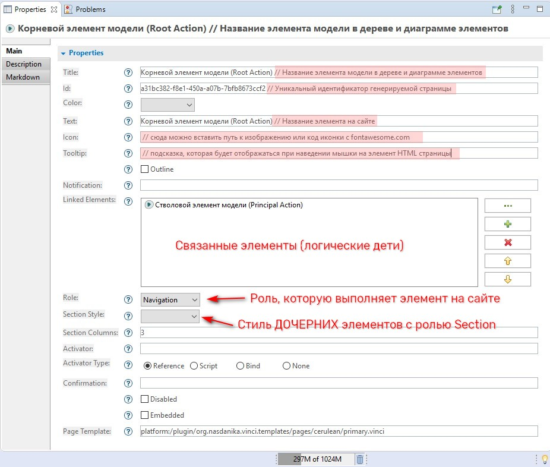
! Для того, чтобы из элемента модели сгенерировалась HTML страница - обязательно должно быть заполнено хотя бы одно из полей, отмеченных звёздочкой.
В поле Title вводится название элемента модели, которое будет отображаться в дереве элементов и в диаграмме.
Это рабочее название - посетители сайта его не увидят.
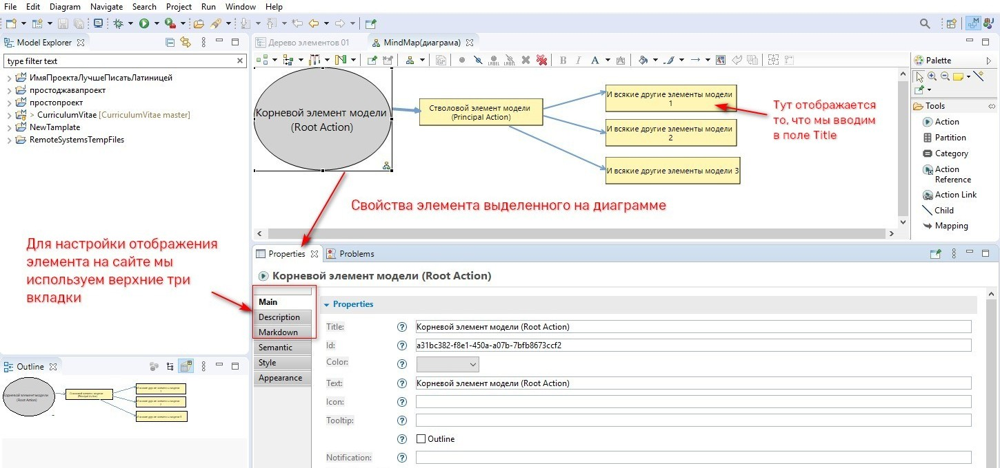
Уникальный идентификационный номер используется для формирования наименования НТМL страницы. Этот номер генерируется автоматически, что очень удобно на этапе разработки сайта - можно сосредоточиться на содержании и не задумываться об именах файлов и о том, какие пути должны быть прописаны в ссылках к этим файлам.
Тем не менее, если пользователю хочется иметь какое либо “говорящее” (семантически значимое) имя, то в любой момент разработки в поле ID можно ввести другое сочетание букв и символов. Например: my_home_page
Необходимо помнить, что в поле ID недопустимы пробелы и специальные символы. И, предпочтительно использовать латиницу.
В данном поле устанавливается цветовой акцент Action: из выпадающего списка необходимо выбрать один из bootstrap-цветов. Для этих цветовых акцентов используются специальные названия:
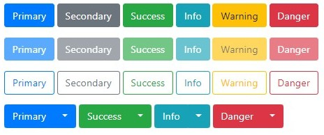
Всего их 8, они всегда называются одинаково, но в разных темах они выражаются разными цветами.
Цветовые классы (акценты) по разному применяются к различным элементам. Результат настройки этого поля может быть неожиданным для пользователя :). Или никаким - это зависит от места элемента в иерархии, его роли, стиля секции (если применимо).
В поле Text вводится название, которое будет отображаться на сайте.
Это название отображается в базовом навигационном каркасе, где оно формирует точку перехода к соответствующему разделу. Так же, название отображается в контент-панели как заголовок второго уровня.
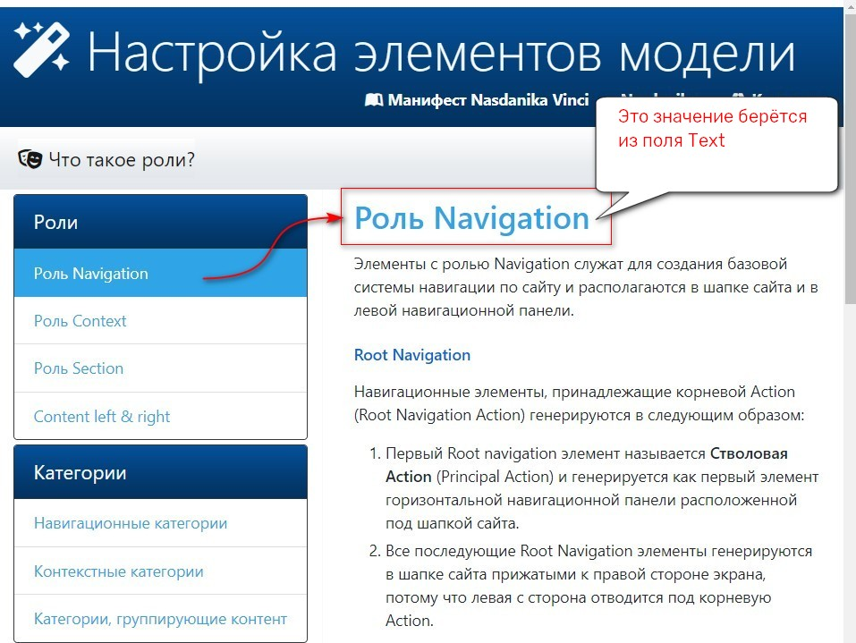
В поле Icon может быть встроено либо какое-то произвольное изображение, либо векторная иконка из набора Font Awesome.
Для того чтобы встроить произвольное изображение, необходимо в этом поле указать к нему путь.
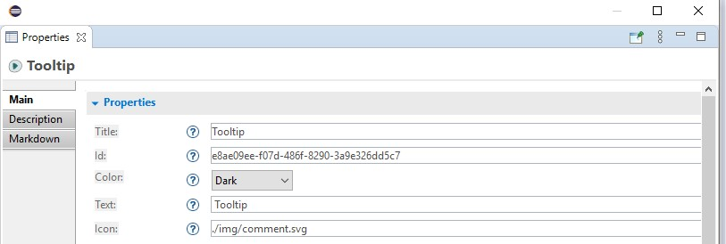
Для того чтобы встроить иконку из набора Font Awesome - необходимо выбрать нужную иконку, скопировать ее код и вставить в поле Icon (без каких либо дополнительных символов).
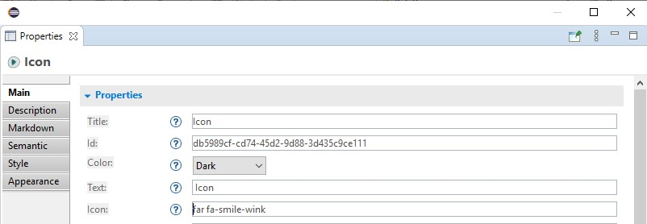
В это поле вводится текст всплывающей подсказки, которая будет показана пользователю при наведении мышки на элемент в навигационном каркасе сайта.
Для примера - наведите мышь на кнопку Tooltip
! Если поле Tooltip не заполнено, то в качестве всплывающей подсказки будет выводиться первая строка из поля Description (оно находится на второй вкладке свойств Action)
Текст введенный в это поле превращается в выделенный текст - оповещение на которое нужно обратить внимание.
Размещается в навигационном каркасе, справа от основного названия, сформированного из поля Text.
Звёздочка слева от слова Notification на кнопке по которой вы сюда перешли - сделана именно таким образом.
В процессе постоения модели мы не только создаём элементы, но и строим их иерархию. Мы это делаем для того, чтобы сформировать навигационный каркас сайта и установить логическую последовательность получения информации. На диаграмме иерархия элемнтов выглядит так:
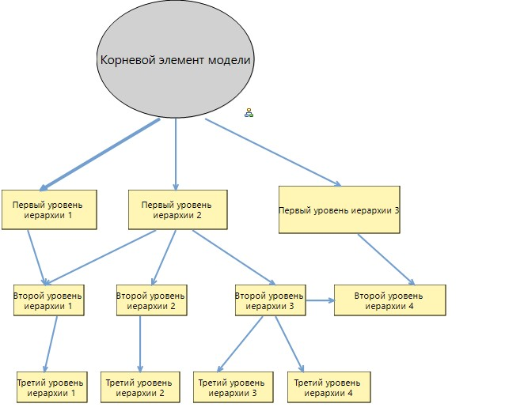
Стрелочки на диаграмме - это связи и они отображаются в поле Linked Elements свойств Action.
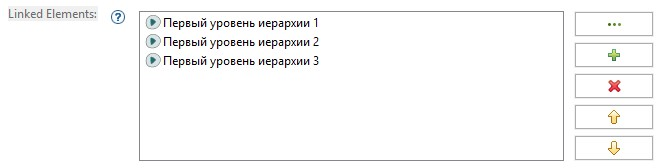
Справа от поля находятся кнопки, которые позволяют выбирать элементы модели, с которыми должны быть установлены связи, удалять связи и изменять их порядок.
От порядка связываения элементов зависит не только порядок их отображения на сайте, но и структура базового навигационного каркаса. Для управления порядком связывания элементов используются стрелочки вверх и вниз справа от поля Linked Elements.
Для того чтобы установить связь с элементом любой модели, находящейся в рамках того же проекта, используется кнопка с тремя точками.
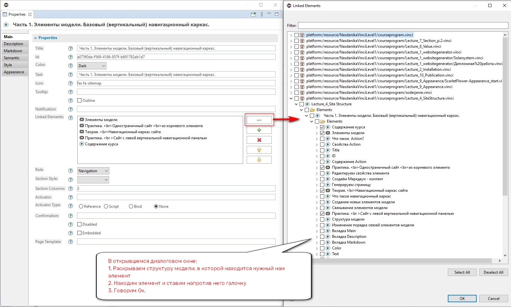
Роль - это важнейший атрибут, который определяет:
То есть, ролью определяется то, в каком блоке страницы будет располагаться элемент и, в некоторых случаях то, каково будет “поведение” его дочерних и родительских элементов.
В текущей версии Nasdanika Vinci Action может иметь одну из шести ролей: Navigation, Context и Section, Content left, Content Right, None . (В будущем предполагается использование двух дополнительных ролей под которые зарезервированы значения View и Edit ).
Рассмотрим три базовые роли: Navigation, Context и Section.
По умолчанию всем Action присваивается роль Navigation. Навигационные Action могут располагаться в шапке сайта (хедере) и в левой боковой навигационной панели. Они формируют базовый навигационный каркас сайта.
Родительский элемент навигационной Action обязательно должен так же иметь роль Navigation и принадлежать к главной навигационной ветке модели сайта.
А вот дочерние элементы навигационных Action могут иметь любые роли.
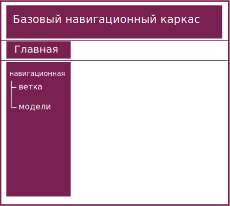
Роль Context - назначается элементам модели, которые не принадлежат к главной навигационной ветке сайта. Эти элементы могут размещаться в футере, горизонтальной навигационной панли или в контент панели - в зависимости от того, какому родительскому элементу они принадлежат.
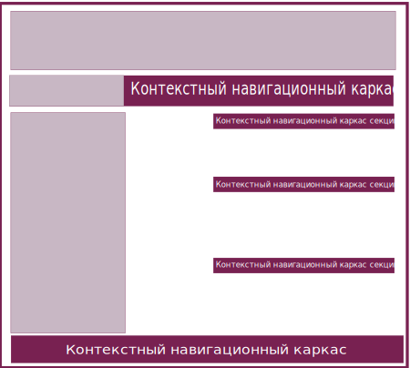
Action c ролью Section являются контейнерами, организующими размещение информации на странице. Возможность многократно вкладывать контейнеры друг в друга позволяет делить область содержания (content-panel) на отдельные блоки, в которых информация может быть представлена различными способами.
В отличие от других ролей Section имеет несколько стилей, которые устанавливаются настройкой Section Style.
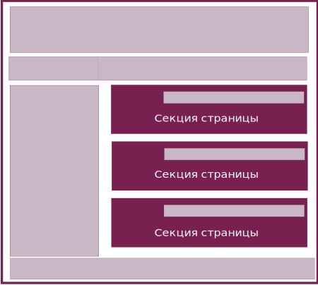
Соответственно, каждая Action может дочернии секции только одного стиля. Совмещать секции разных стилей на одной странице можно вкладывая их друг в друга.
Данная настройка устанавливает количество секций со стилем Card, которое может поместиться в контент-панели.
Значение должно быть от 1 до 12.
Чем больше это значение - тем мельче будут ваши карточки.
Активатором страницы может быть ссылка (Reference) или скрипт (некий исполняемый код).
Если выбран тип активатора Reference и поле Activator не заполнено, то генератор создает HTML страницу, и активатором выступает адрес этой страницы. В результате - мы щелкнем по ссылке на Action в навигационном каркасе и в области контент-панели отразится содержание данного элемента модели и дочерних элементов с ролью Section/
Если выбран тип активатора Reference и в поле Activator введен адрес какого либо внешнего HTML ресурса, то в навигационом каркасе сформируется точка перехода к этому внешнему ресурсу. Если мы щелкем по этому элементу, то уйдем с нашего сайта. Если мы ссылаемся на внешний ресурс, то указываем к нему абсолютный путь:
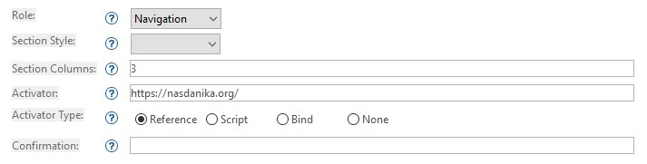
Путь к локальному (находящемуся в рамках проекта) файлу должен начинаться с сочетания знаков ./
Затем вводится относительный путь к файлу. Путь строится от папки, к которую генерируются HTML страницы из этой модели.
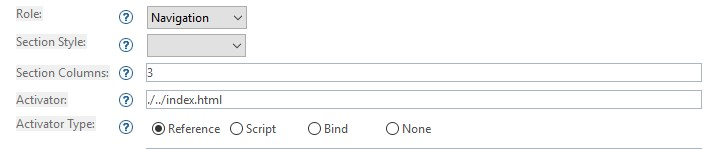
В поле Description вводится описание страницы. Если на вкладке Main не заполнено поле Tooltip, то первая строка описания выводится в качестве всплывающей подсказки при наведении мышки на элемент страницы.
Но на самом деле, поле Description (описание) задумано как служебное. Если вы работаете в команде, то в этом поле вы оставляете заметки для других членов команды: что необходимо сделать в данном элементе или ветке модели, чтобы довести работу до конца. То есть - это поле для технического задания, которое Вы можете написать для дизайнеров и разработчиков сайта или для самого себя.
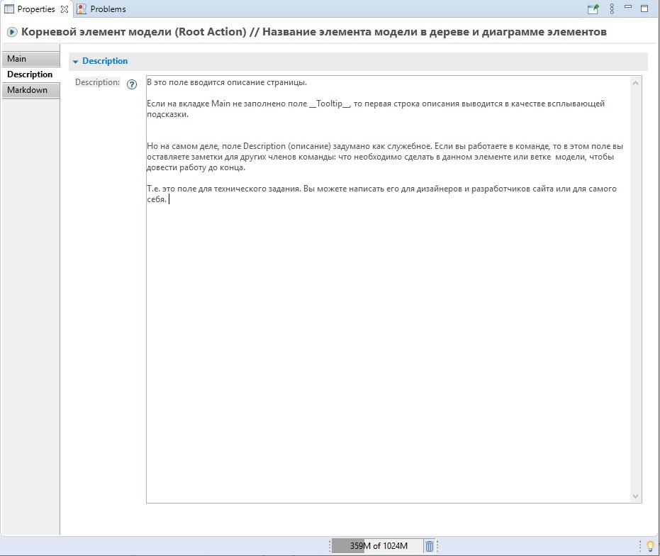
Ввод текста непосредственно в самой Action является самым простым и удобным способом создания контента при первоначальной работе над моделью сайта. Если в дальнейшем вам понадобится что-то более сложное чем текст с заголовками, картинками, ссылками и т.д., то Вы можете воспользоваться другими разнообразными возможностями, предоставляемыми генератором Nasdanika Vinci.
Суть в том, что вы просто вводите текст, вставляете в этом тексте пути к изображениям, которые хотите встроить в страницу или ссылки на другие страницы. Затем генератор преобразует этот текст в HTML и встраивает в контент-панель элемента модели.
Синтаксис языка разметки Markdown очень прост, по нему легко найти справку в интернете. Так же существуют специальные бесплатные редакторы , в которых писать маркдаун-текст легко и приятно.
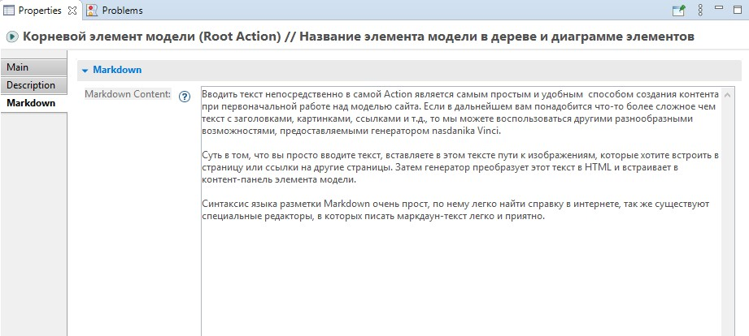
{kind=link}
{kind=link}